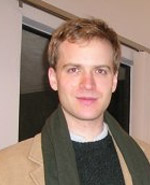

Michael Rescorla
Associate Professor of Philosophy
PhD, Harvard University
Areas of Study
- Philosophy of Language
- Philosophy of Mind
- Philosophy of Psychology
- Logic
Info
Department of Philosophy
5631 South Hall #5716
Santa Barbara, CA 93106- Phone: 805-893-3080
- Fax: 805-893-8221
- Office Hours (Winter 2014): please email
Research Abstract
I work mainly on philosophy of language, philosophy of mind (including philosophy of psychology), and philosophy of logic. My current research concerns three topics: the nature of assertion; non-propositional varieties of representation; and the relation between computational and mental processes. Comments on all papers (especially unpublished drafts) are welcome.
Selected Bibliography
Published Papers
“A Theory of Computational Implementation”, forthcoming in Synthese
I articulate and defend a new theory of what it is for a physical system to implement an abstract computational model. According to my descriptivist theory, a physical system implements a computational model just in case the model accurately describes the system. Specifically, the system must reliably transit between computational states in accord with mechanical instructions encoded by the model. I contrast my theory with an influential approach to computational implementation espoused by Chalmers, Putnam, and others. I deploy my theory to illuminate the relation between computation and representation. I also address arguments, propounded by Putnam and Searle, that computational implementation is trivial.
“Rationality as a Constitutive Ideal”, A Companion to Davidson, edited by Ernest Lepore and Kirk Ludwig, published by Wiley-Blackwell.
“The Causal Relevance of Content to Computation”, forthcoming in Philosophy and Phenomenological Research
Many philosophers worry that the computational theory of mind engenders epiphenomenalism. Building on Block’s (1990) discussion, I formulate a particularly troubling version of this worry. I then develop a novel solution to CTM’s epiphenomenalist conundrum. I develop my solution within an interventionist theory of causal relevance, as espoused by Woodward (2003) and others. My solution radically departs from orthodox versions of CTM. In particular, I reject the widespread picture of digital computation as formal syntactic manipulation.
“How to Integrate Representation into Computational Modeling, and Why We Should”, The Journal of Cognitive Science
This paper will appear in a special issue of The Journal of Cognitive Science, guest edited by Gualtiero Piccinini. The issue centers around David Chalmers’s “A Computational Foundation for the Study of Cognition,” which has been available on-line for many years but which has remained unpublished until now. The special issue contains papers that discuss Chalmers’s position and related topics, along with a response by Chalmers. My entry critiques Chalmers’s version of CTM and then sketches my own alternative version of CTM.
“Copeland and Proudfoot on Computability”, Studies in History and Philosophy of Science A
A reply to Copeland and Proudfoot, who criticize my earlier paper “Church’s Thesis and the Conceptual Analysis of Computability”
“Against Structuralist Theories of Computational Implementation”, forthcoming in The British Journal for the Philosophy of Science
Under what conditions does a physical system implement or realize a computation? Structuralism about computational implementation, espoused by Chalmers and others, holds that a physical system realizes a computation just in the case the system instantiates a pattern of causal organization isomorphic to the computation’s formal structure. I argue against structuralism through counter-examples drawn from computer science. On my opposing view, computational implementation sometimes requires instantiating semantic properties that outstrip any relevant pattern of causal organization.
“Bayesian Perceptual Psychology”, forthcoming in The Oxford Handbook of the Philosophy of Perception, ed. Mohan Matthen
I survey Bayesian models of perception. I then explore the philosophical implications of this scientific research program. Among other topics, I discuss intentional realism, eliminativism, relationalism, and the computational theory of mind.
“Millikan on Honeybee Navigation and Communication”, Millikan and Her Critics, ed. Justine Kingsbury, Dan Ryder, and Ken Williford. Malden: Blackwell
“Are Computational Transitions Sensitive to Semantics?”, Australasian Journal of Philosophy
The formal conception of computation (FCC) holds that computational processes are not sensitive to semantic properties. FCC is popular, but it faces well-known difficulties. Accordingly, authors such as Block and Peacocke pursue a “semantically-laden” alternative, according to which computation can be sensitive to semantics. I argue that computation is insensitive to semantics within a wide range of computational systems, including any system with “derived” rather than “original” intentionality. FCC yields the correct verdict for these systems. I conclude that there is only one promising strategy for semantically-laden theorists: identify special computational systems that help generate their own semantic properties, and then show that computation within those systems is semantically-laden.
“Church’s Thesis and the Conceptual Analysis of Computability”, Notre Dame Journal of Formal Logic
Church’s thesis asserts that a number-theoretic function is intuitively computable if and only if it is recursive. A related thesis asserts that Turing’s work yields a conceptual analysis of the intuitive notion of numerical computability. I endorse Church’s thesis, but I argue against the related thesis. I argue that purported conceptual analyses based upon Turing’s work involve a subtle but persistent circularity.
“Assertion and its Constitutive Norms”, Philosophy and Phenomenological Research
Alston, Searle, Williamson, and many others advocate the restrictive model of assertion, according to which certain constitutive assertoric norms restrict which propositions one may assert. Sellars and Brandom advocate the dialectical model of assertion, which treats assertion as constituted by its role in the game of giving and asking for reasons. Sellars and Brandom develop a restrictive version of the dialectical model. I explore a non-restrictive version of the dialectical model. On such a view, constitutive assertoric norms constrain how one must react if an interlocutor challenges one’s assertion, but they do not constrain what one should assert in the first place.
“A Linguistic Reason for Truthfulness”, in Truth and Speech Acts, ed. Dirk Greimann and Geo Siegwart
This paper further develops the non-restrictive dialectical perspective. Many philosophers hold that truthfulness is somehow constitutive of assertion. I argue against this view while simultaneously attempting to ground truthfulness in assertion’s essential features. I argue that truthfulness is the prima facie best way to avoid decisive counter-arguments against what one says. Moreover, avoiding decisive counter-arguments is a constitutive goal of rational dialectic. Thus, while truthfulness is not constitutive of assertion, it is the rational default strategy for achieving a goal that is constitutive of assertion.
“Shifting the Burden of Proof?”, The Philosophical Quarterly
Dialectical foundationalists, including Adler, Brandom, Leite, and Williams, claim that some asserted propositions do not require defense just because an interlocutor challenges them. By asserting such a proposition, the speaker shifts the burden of proof to her interlocutor. Dialectical egalitarians claim that all asserted propositions require defense when challenged. I elucidate the dispute between dialectical foundationalists and egalitarians, and I defend a broadly egalitarian stance against several prominent objections.
“Epistemic and Dialectical Regress”, Australasian Journal of Philosophy
Dialectical egalitarianism apparently generates a vicious “regress of justifications,” since an interlocutor can challenge the premises through which a speaker defends her original assertion, and so on ad infinitum. I argue that the putative regress is not worrisome and that egalitarianism can handle it quite satisfactorily. I also defend a positive view that combines an anti-foundationalist conception of dialectical interaction with a foundationalist conception of epistemic justification.
“Predication and Cartographic Representation”, Synthese
I argue that maps do not feature predication, as analyzed by Frege and Tarski. I take as my foil Casati and Varzi’s Parts and Places, which attributes predication to maps. I adduce intuitions about cartographic truth-conditions that militate against this attribution. I conclude that attaching a marker to map coordinates is a different mode of semantic composition than attaching a predicate to a singular term.
“Cognitive Maps and the Language of Thought”, British Journal for the Philosophy of Science
Fodor advocates a view of cognitive processes as computations defined over the language of thought (or Mentalese). Even among those who endorse Mentalese, considerable controversy surrounds its representational format. What semantically relevant structure should scientific psychology attribute to Mentalese symbols? Researchers commonly emphasize logical structure, akin to that displayed by predicate calculus sentences. To counteract this tendency, I discuss computational models of navigation drawn from probabilistic robotics. These models involve computations defined over cognitive maps, which have geometric rather than logical structure. They thereby demonstrate the possibility of rational cognitive processes in an exclusively non-logical representational medium. Furthermore, they offer much promise for the empirical study of animal navigation.
“Chrysippus’s Dog as a Case Study in Non-Linguistic Cognition”, Philosophy of Animal Minds, ed. Robert Lurz. Cambridge: Cambridge University Press
I critique an ancient argument for the possibility of non-linguistic deductive inference. The argument, attributed to Chrysippus, describes a dog whose behavior supposedly reflects disjunctive syllogistic reasoning. Drawing on contemporary robotics, I urge that we can equally well explain the dog’s behavior by citing probabilistic reasoning over cognitive maps. I then critique various experimentally-based arguments from scientific psychology that echo Chrysippus’s anecdotal presentation.
Works in Progress
- “Can Perception Halt the Regress of Justifications?”, forthcoming in Ad Infinitum: New Essays on Epistemological Infinitism, edited by Peter Klein and John Turri, published by Oxford University Press.
Other Publications
Review of Gary Hatfield’s Perception and Cognition, Philosophical Quarterly 61 (242), 2011, 205–207.
Review of Christopher Gauker’s Words without Meaning,Philosophical Review, Vol. 115, No. 1, January 2006, 121–124.
“Convention”,Stanford Encyclopedia of Philosophy